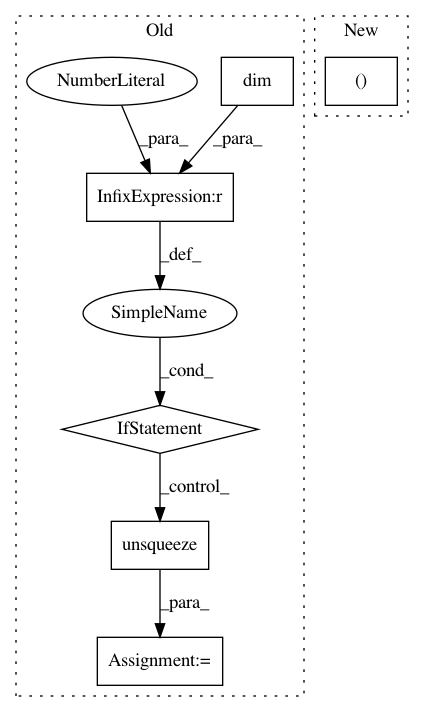

1f0750670cf8ea24ad264debf9603002ab0fb565,torch_geometric/nn/pool/mem_pool.py,MemPool,forward,#MemPool#Any#Any#,77
Before Change
:math:`\mathbf{M} \in {\{ 0, 1 \}}^{B \times N}` indicating
the valid nodes for each graph. (default: :obj:`None`)
x = x.unsqueeze(0) if x.dim() == 2 else x
B = x.shape[0]
H = self.heads
K = self.num_keys
N = x.shape[1]
dist = torch.cdist(self.k.view(H * K, -1), x.view(B * N, -1), 1)
dist = (1 + (dist**2 / self.tau)).pow(-(self.tau + 1) / 2.0)
dist = dist.view(H, K, B, N).permute(2, 0, 3, 1)
S = dist / dist.sum(3).unsqueeze(3) // B*H*N*K
S = self.conv(S).squeeze(1)
S = torch.softmax(S, 2) // B*N*K
S = self.apply_mask(S, mask)
x = self.lin(matmul(S.transpose(1, 2), x)) // B*K*F"
x = self.act(x)
return x, S
After Change
def forward(self, x: Tensor,
batch: Optional[Tensor] = None) -> Tuple[Tensor, Tensor]:
x, mask = to_dense_batch(x, batch)
(B, N, _), H, K = x.size(), self.heads, self.num_clusters
In pattern: SUPERPATTERN
Frequency: 3
Non-data size: 6
Instances
Project Name: rusty1s/pytorch_geometric
Commit Name: 1f0750670cf8ea24ad264debf9603002ab0fb565
Time: 2021-03-15
Author: matthias.fey@tu-dortmund.de
File Name: torch_geometric/nn/pool/mem_pool.py
Class Name: MemPool
Method Name: forward
Project Name: ncullen93/torchsample
Commit Name: 6ddf825a4aa1bcf3a35bba8d36bc433fe5ebaa39
Time: 2017-04-24
Author: ncullen@Nicks-MacBook-Pro.local
File Name: torchsample/utils.py
Class Name:
Method Name: th_nearest_interp_3d
Project Name: rusty1s/pytorch_geometric
Commit Name: e5bfe8cd8a0b77a846decd70d58ececbdb6542f4
Time: 2018-05-02
Author: matthias.fey@tu-dortmund.de
File Name: torch_geometric/nn/functional/pool/pool.py
Class Name:
Method Name: pool